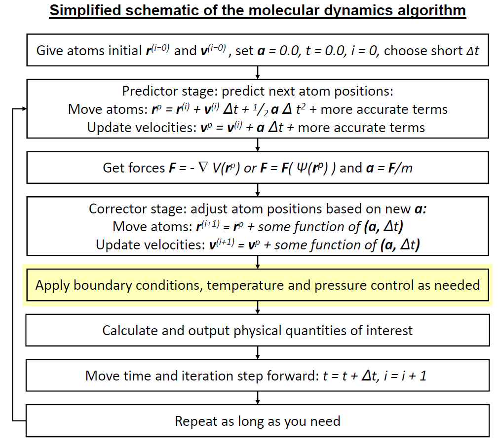
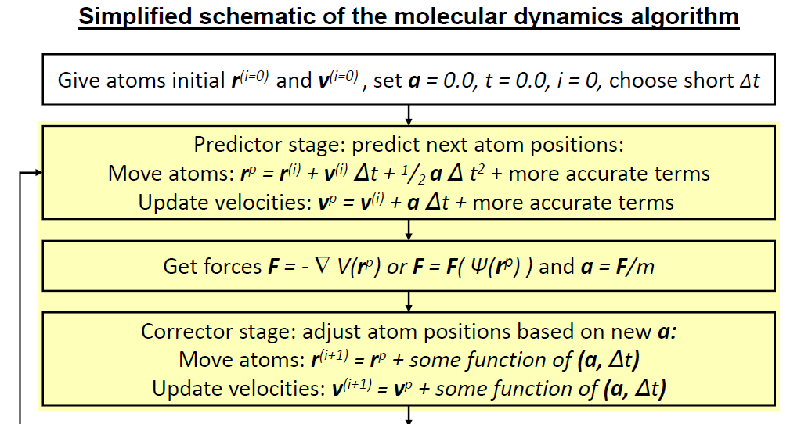

Lab 6: Molecular dynamics¶
The aim of this lab is to create molecular dynamics simulations by defining your own cutoff-scheme, molecular dynamics integrator, and thermostat.
Things to do will be in blue boxes.
Things to take note for questions are in yellow.
To make things easier, much of the code in this lab is hidden away in “widgets”: the things with text boxes etc.
Important: Your widget states do not save automatically. You can go to Widgets > Save Notebook Widget State, but this is prone to failure. To avoid losing work, download your charts as a .png and write down chosen values for things like epsilon and sigma if you need to reproduce them.
[1]:
import plotly.express as px
import numpy as np
from pymd import (lj_potential, coulomb_potential,
nb_potential, nb_rf_potential,
MolWidget)
Python¶
Functions¶
In Mathematica, you defined functions like this:
my_function[x_, y_, z_] := x + y + z
Python has a different syntax. In Python, that same function would look like this:
def my_function(x, y, z):
return x + y + z
There are several key differences. First, functions always begin with def and usually return an output. Secondly, everything “inside” the function must be indented. You can use spaces to indent, but tabs are easier. This means that you can include multiple lines in a function, which is often handy. For example:
def my_complicated_function(x, y, z, a):
b = x + y^z - a
c = 3*z + x^a
return b + c
The brackets () are used for passing in arguments. To call the complicated function, you could write:
answer = my_complicated_function(3, 2, 5, 1)
Function and variable names should always start with alphabet character. They can include underscores and numbers, but numbers should never be the first letter. Do not use punctuation other than underscores. The following are valid names:
name
NaMe
_name
name_
name2
The following are not valid names:
2name
.name
nam,e
Jupyter¶
This document is a Jupyter notebook, much like a Mathematica notebook. If you can see an Autosave dropdown on the toolbar, turn that to 2 minutes. Otherwise, you can save manually with command+s.
Jupyter has 2 kinds of cells:
Markdown cells
Code cells.
Markdown cell¶
This cell is a Markdown cell. This is what you use if you want to type text that won’t be evaluated like code. You can double click on every cell in this notebook to see how it was created. To get out of editing mode, execute a cell with shift+enter.
Double-click the cell below for formatting tips.
Helpful text formatting¶
Single asterisks for italics.
Double asterisks for bold.
Single left asterisk
for a list
of items
Use just one backtick for code formatting in a sentence.
Use three
backticks for
multiline code formatting
Use just one \(dollar\ sign\) for inline \(\LaTeX\).
Just one newline won’t make a new paragraph.
You need two.
Code cell¶
[2]:
# This cell is a code cell.
# The hash is the comment character.
# Everything after a hash won't be evaluated as Python.
print('This is how to print a string')
3 + 2
This is how to print a string
[2]:
5
Non-bonded potentials¶
First, let’s look at non-bonded potentials. The Lennard-Jones potential approximates an interaction between a pair of neutral atoms. It represents a combination of Pauli repulsion and van der Waals’ interactions. The typical expression of a Lennard-Jones potential between atoms A and B is:
Define a Lennard-Jones potential between atoms A and B in the following cell using the terms epsilon, sigma and r. (Replace the return r that is already there).
Save a picture of your graph with labelled axes and note the values of epsilon and sigma you used to get the picture.
r represents the distance between atom A and atom B: \(r_{AB}\).
Hit shift+enter on the cell when you have defined your function to see the effect of your changes. You may have to drag a slider to update the plot as well.
[3]:
def calculate_lj(epsilon, sigma, r):
return r
lj_potential.calculate = calculate_lj
lj_potential.widget
A Coulomb potential between atoms A and B is defined:
\(q\) represents the charge of the respective atom. The vacuum permittivity \(\epsilon_0=8.854 \times 10^{-12}C^2N^{-1}m^{-2}\). A charge is in Coulomb units. Convert these to nanometers for your function.
Define a Coulomb potential between atoms A and B in the following cell using qa to represent the charge of atom A, and qb to represent the charge of atom B. r represents the distance between them.
Save a picture of your graph with labelled axes and note the values of qa and qb you used to get the picture.
[4]:
def calculate_coulomb(qa, qb, r):
return r
coulomb_potential.calculate = calculate_coulomb
coulomb_potential.widget
Add your Lennard-Jones and Coulomb potentials together in the cell below for a unified non-bonded potential. (Hint: you can call the functions you’ve defined earlier.)
[5]:
def calculate_nb(epsilon, sigma, qa, qb, r):
return r
nb_potential.calculate = calculate_nb
nb_potential.widget
Cut-off schemes and values¶
Computing non-bonded interactions is the most expensive part of a molecular dynamics simulation. In a normal simulation, the number of computations scales at \(N^2\) where \(N\) is the number of atoms involved. It is common to attempt to decrease this cost by limiting the number of computed non-bonded interactions using cutoff schemes, or by transforming long-range interactions into Fourier space.
Cutoff schemes are particularly useful for electrostatic interactions. On the premise that atoms very far away have little effect on each other, these schemes only compute interactions within a given radius nb_cutoff around each atom. This effectively reduces the cost of a simulation to linear time.
Choosing a suitable cutoff radius is a balance between keeping an accurate representation of inter-atomic interactions, but keeping computational cost as low as possible.
Considering the values of epsilon and sigma below, choose a cut-off value for your long-ranged non-bonded interactions.
Sigma values
\(\sigma_{LJ}\) |
H (bonded to O) |
H (bonded to C) |
H (bonded to N) |
O (water) |
O (protein) |
C |
|---|---|---|---|---|---|---|
H (bonded to O) |
0 |
0.1324765 |
0.053454 |
0.1575305 |
0.1533235 |
0.1699835 |
H (bonded to C) |
0.1324765 |
0.264953 |
0.1859305 |
0.290007 |
0.2858 |
0.30246 |
H (bonded to N) |
0.053454 |
0.1859305 |
0.106908 |
0.2109845 |
0.2067775 |
0.2234375 |
O (water) |
0.1575305 |
0.290007 |
0.2109845 |
0.315061 |
0.310854 |
0.327514 |
O (protein) |
0.1533235 |
0.2858 |
0.2067775 |
0.310854 |
0.306647 |
0.323307 |
C |
0.1699835 |
0.30246 |
0.2234375 |
0.327514 |
0.323307 |
0.339967 |
Epsilon values
\(\epsilon_{LJ}\) |
H (bonded to O) |
H (bonded to C) |
H (bonded to N) |
O (water) |
O (protein) |
C |
|---|---|---|---|---|---|---|
H (bonded to O) |
0 |
0 |
0 |
0 |
0 |
0 |
H (bonded to C) |
0 |
0.0656888 |
0.0656888 |
0.204458878 |
0.240471974 |
0.173400503 |
H (bonded to N) |
0 |
0.0656888 |
0.0656888 |
0.204458878 |
0.240471974 |
0.173400503 |
O (water) |
0 |
0.204458878 |
0.204458878 |
0.636386 |
0.748478126 |
0.539715632 |
O (protein) |
0 |
0.240471974 |
0.240471974 |
0.748478126 |
0.880314 |
0.634780377 |
C |
0 |
0.173400503 |
0.173400503 |
0.539715632 |
0.634780377 |
0.45773 |
Justify your choice by referring to general scale of \(\sigma\) and \(\epsilon\) and a graph of your non-bonded potential (in a text document).
[6]:
nb_cutoff = ...
PDB File¶
Load in alanine tripeptide in water by executing the cell below.
[7]:
mw = MolWidget('2beg_solv_ions.gro', atom_index=3)
mw.widget
Not including the central atom, how many atoms would you need to calculate non-bonded interactions with your non-bonded cutoff value?
Add 0.3 nm to your cutoff value. How many atoms would you compute non-bonded interactions for with this higher value?
Subtract 0.3 nm from your original cutoff. How many atoms would you compute non-bonded interactions for with this lower value?
Reaction-field cutoff scheme¶
Typically, the energy of a Lennard-Jones potential is cut to 0 at the cutoff radius. Reaction-field electrostatics use a relative dielectric constant to model the surrounding environment. This transforms the electrostatic term to:
A dielectric term is defined for you below. Hit shift+enter to run the cell. If you choose to change your nb_cutoff value, you will have to re-run the cell below.
[8]:
def calculate_coulomb_rf(qa, qb, nb_cutoff, epsrf, r):
rf_top = (epsrf - 1) * r * r
rf_bottom = (2*epsrf + 1) * (nb_cutoff**3)
return qa * qb * (1/r + rf_top/rf_bottom)
def calculate_nb_rf(epsilon, sigma, qa, qb, nb_cutoff, epsrf, r):
return calculate_lj(epsilon, sigma, r) + calculate_coulomb_rf(qa, qb, nb_cutoff, epsrf, r)
nb_rf_potential.cutoff = nb_cutoff
nb_rf_potential.calculate = calculate_nb_rf
nb_rf_potential.widget
What is one method for dealing with discontinuous jumps in energy when charge groups enter and leave the cut-off boundary? (1 mark)
The NVE ensemble¶
In this section you will define key steps in the molecular dynamics simulation algorithm, and use that to run a simulation in the microcanonical (NVE) ensemble. We will be following this schematic.

Setup¶
[9]:
from pymd import NVE
import ase.units as units
from ase.md.velocitydistribution import MaxwellBoltzmannDistribution
We will start by creating a simulation framework and loading in an alanine tripeptide (without water to save computing time).
[10]:
md_nve = NVE(filename='ala3.gro',
timestep=0.2*units.fs,
cutoff=1.4*units.nm)
md_nve.atom_view
Have a look at the energy of the system before we start by executing the cell below.
[11]:
md_nve.print_energy()
Energy per atom: Epot = 0.566eV Ekin = 0.000eV (T= 0K) Etot = 0.566eV
Now we can begin our simulation. This is our first step.

Our system doesn’t currently have any movement. We need to set initial velocities. Usually we aim for a value around 298-300 K, or 25-27 °C.
[12]:
md_nve.set_initial_velocities(MaxwellBoltzmannDistribution,
300*units.kB)
What is the energy now?
[13]:
md_nve.print_energy()
Energy per atom: Epot = 0.566eV Ekin = 0.041eV (T=321K) Etot = 0.608eV
Defining an integrator¶
Here we will define a function next_step, to propagate atom movement for one timestep. We are at the part highlighted in yellow, but we will not follow the equations exactly.
The above schematic describes the commonly used leapfrog algorithm, where velocities and positions are updated at alternating half time-steps. For simplicity, we are defining the Velocity Verlet integrator here, where velocities and positions are updated at the same time. Equations are below.
The basic steps are this stage are:
calculate the velocities at \(t+\frac{1}{2}dt\)
v_half_stepas a function of thetimestep\(dt\) and the accelerationcalculate
new_positions\(r^{(i+1)}\) as a function of the oldpositions\(r^{(i)}\),v_half_step, and thetimestep\(dt\)update the atoms with the
new_positionscalculate updated forces
new_forcescalculate
new_velocitiesfromnew_forcesupdate the atoms with
new_velocities.
Variable meanings:
Variable |
Math expression |
|---|---|
|
\(\vec{v}(t+\frac{1}{2}dt)\) |
|
\(\vec{F}(t)\) |
|
\(\vec{v}(t)\) |
|
$ m$ |
|
$ dt$ |
|
\(\vec{r}(t)\) |
|
\(\vec{r}(t+dt)\) |
|
\(\vec{F}(t+dt)\) |
|
\(\vec{v}(t+dt)\) |
Step 1: getting v_half_step
The velocities a half time-step in the future can be computed from the current velocities and the acceleration. The code below provides you with forces and masses; \(\vec{F} = m\vec{a}\).
Step 2: getting new_positions
With v_half_step defined, you can now define new_positions.
Steps 3 and 4 are done for you.
Step 5: getting new_velocities
Finish the function below and execute the cell to link the integrator to your simulation.
[14]:
def next_step(md, forces):
velocities = md.atoms.get_velocities()
masses = md.masses
positions = md.atoms.get_positions()
dt = md.dt
v_half_step = ...
new_positions = ...
md.atoms.set_positions(new_positions)
md.atoms.set_velocities(v_half_step)
new_forces = md.atoms.get_forces(md=True)
new_velocities = ...
md.atoms.set_velocities(new_velocities)
return new_forces
md_nve.next_step = next_step
Simulating¶
Now that an integrator is defined, we can run a simulation!
[15]:
forces = md_nve.atoms.get_forces()
print(forces)
[[ 3.74706729e+00 8.92805071e+00 -6.81900634e+00]
[ 4.21075705e+00 -6.53804693e+00 -3.53529728e+00]
[ 5.59587410e-01 -2.70588689e+00 1.10995476e+01]
[-8.04385231e+00 1.01468685e+00 -5.65664963e-01]
[ 9.12699531e-01 -1.91455376e+00 2.82267357e+00]
[-7.72326458e-01 1.55498294e+00 -2.66826164e+00]
[ 6.84952339e+00 -3.12797938e+00 -2.58403478e+00]
[-4.33354293e+00 -1.66984829e+01 1.40833532e+01]
[ 5.05643700e-01 -1.14096255e+00 2.15069022e+00]
[ 1.57620787e+00 2.85570273e+00 2.84986042e-01]
[ 8.65795892e-01 -3.11716944e-01 2.32273362e-01]
[-8.55722572e-01 1.10080204e+00 -1.02696664e+00]
[ 2.10338031e+00 -3.93100671e+00 3.62640141e+00]
[-1.43842184e+00 2.90072811e+00 -2.75294586e+00]
[-1.08130909e+00 1.72987116e+00 -4.19435797e+00]
[ 5.47429483e-01 -1.66443013e+00 3.53984228e+00]
[-8.33232750e-01 2.39268773e+00 2.44466405e+00]
[-1.24066580e+00 -1.76061977e+00 3.21935159e-02]
[-1.42857935e-01 7.85472400e-01 -2.00527480e+00]
[ 1.92702502e+00 -6.76330635e-01 1.96798286e-01]
[ 3.36286852e-01 8.52332125e-01 -3.25093596e-01]
[ 1.53007486e-02 -1.32534819e+00 1.20185208e+00]
[-9.44283844e-01 3.89282022e+00 -4.21294709e+00]
[ 7.37612532e-01 -2.81978297e+00 3.20364379e+00]
[-5.02464668e-01 -1.41302914e+00 4.09478269e+00]
[-3.16170678e-01 1.11003458e+00 -3.54444381e+00]
[ 1.38189296e+00 -2.39090097e+00 -2.16916585e+00]
[-2.01427605e+00 2.81804330e-01 -3.49048282e-01]
[ 2.09085241e-01 -4.57652186e-01 2.22868315e+00]
[ 8.28286823e-01 1.81783834e+00 -2.53778497e-01]
[-3.23742272e+00 -1.35456355e+00 -7.26131054e-03]
[ 2.15441313e+00 3.04840531e+00 -6.04318348e-01]
[-3.71144560e+00 1.59650740e+01 -1.36245182e+01]]
As the schematic suggests, the simulation runs iterative steps over the integrator you have defined to move atoms. This is shown manually below.
[16]:
f_step_1 = md_nve.step(forces)
md_nve.print_energy()
---------------------------------------------------------------------------
ValueError Traceback (most recent call last)
<ipython-input-16-457c91e24732> in <module>
----> 1 f_step_1 = md_nve.step(forces)
2 md_nve.print_energy()
~/OneDrive/CHEM3208/06_md/ase_prac/pymd/nve.py in step(self, f)
114 if f is None:
115 f = self.atoms.get_forces()
--> 116 out = self.next_step(self, f)
117 self.update_properties()
118 return out
<ipython-input-14-da1d82885f31> in next_step(md, forces)
8
9 new_positions = ...
---> 10 md.atoms.set_positions(new_positions)
11 md.atoms.set_velocities(v_half_step)
12
~/.local/lib/python3.7/site-packages/ase/atoms.py in set_positions(self, newpositions, apply_constraint)
639 constraint.adjust_positions(self, newpositions)
640
--> 641 self.set_array('positions', newpositions, shape=(3,))
642
643 def get_positions(self, wrap=False):
~/.local/lib/python3.7/site-packages/ase/atoms.py in set_array(self, name, a, dtype, shape)
455 if a.shape != b.shape:
456 raise ValueError('Array "%s" has wrong shape %s != %s.' %
--> 457 (name, a.shape, b.shape))
458 b[:] = a
459
ValueError: Array "positions" has wrong shape () != (33, 3).
[ ]:
f_step_2 = md_nve.step(f_step_1)
md_nve.print_energy()
[ ]:
f_step_3 = md_nve.step(f_step_2)
md_nve.print_energy()
However, most programs have a function to call the next_step function themselves, provided that a number of steps is specified. The cell below runs 300 steps, printing the energy after every 10 steps.
Run the cell below. Does the energy per atom change?
[ ]:
for i in range(30):
md_nve.run(10)
md_nve.print_energy()
View your trajectory below. What happens?
[ ]:
md_nve.traj_view
Plotting simulation properties¶
The simulation properties can be viewed in Python with the table below. Alternatively, you can look for nve.csv and make plots in Excel.
[ ]:
nve_properties = md_nve.get_properties()
nve_properties
From here you can create interactive plots like so:
[ ]:
fig_nve_temp = px.line(nve_properties, x='Time (fs)',
y='Temperature (K)',
title='my_title')
fig_nve_temp
To change the Y-axis:
[ ]:
fig_nve_temp.update_yaxes(range=[0, 3000])
If you would like to add a new column with converted units, do it like below:
[ ]:
nve_properties['Time (ps)'] = nve_properties['Time (fs)']/1000
nve_properties
Plot the temperature over time. Is it what you expect?
[ ]:
px.line(nve_properties, x='Time (fs)', y='Temperature (K)', title='NVE simulation')
Plot the kinetic energy, potential energy, and total energy over time. Save your plots and include them in your text document. Which energy is held constant in an NVE simulation? (2 marks)
[ ]:
px.line(nve_properties, x='Time (fs)', y='Total energy (eV)', title='NVE simulation')
[ ]:
The NVT ensemble¶
We often want to simulate systems where energy is allowed to vary, but the average temperature remains consistent. In an NVT ensemble, our molecular system is in thermal equilibrium with a heat bath at a fixed temperature. It can exchange energy with the heat bath. This mimics real-life experimental conditions much more than the closed-system of an NVE ensemble.
In this section you will define a thermostat algorithm, and use that to run a simulation in the canonical (NVT) ensemble. We are now up to here in the schematic:
[ ]:
from pymd import NVT
Setup¶
We set up our simulation as before.
[ ]:
md_nvt = NVT(filename='ala3.gro',
timestep=0.2*units.fs,
cutoff=1.4*units.nm,
temperature=300, # Kelvin
tau=5*units.fs) # coupling constant
[ ]:
md_nvt.set_initial_velocities(MaxwellBoltzmannDistribution,
300*units.kB)
Rescaling velocities with the Berendsen thermostat¶
The temperature of a molecular system is proportional to the kinetic energy.
\(k_B\) is Boltzmann’s constant and \(N_{df}\) is the number of degrees of freedom.
Typically, \(N_{constraints}=3\): the conservation of momentum in the x, y, and z directions.
Modifying the velocities of the atoms can control the temperature of our simulations. From the above equations, we can see that:
Conserving temperature
One way to conserve temperature is to simply rescale velocities at every time step so that the temperature \(T\) is always our desired temperature \(T_0\).
However, this can result in rapid energy transfers to, from and among the degrees of freedom in the system, resulting in fun phenomena like the “flying ice cube” problem.
Introducing the temperature coupling time constant
One way to reduce potential flying ice cubes is to reduce the amount of velocity rescaling. \(\tau\) controls the rate of heat transfer. Instead of
we instead use
The above equation is the Berendsen thermostat algorithm. It gives rise to this velocity rescaling factor:
Defining the Berendsen thermostat in Python
The goal of the function rescale_velocities is to set new scaled_velocities that use the Berendsen algorithm to keep a consistent average temperature.
Variable meanings:
Variable |
Math expression |
|---|---|
|
\(\tau\) |
|
\(T_0\) |
|
\(T\) |
|
$ dt$ |
|
\(v_{current}\) |
|
\(v_{scaled}\) |
You may like to use np.sqrt(things_to_square_root) for your square root function.
[ ]:
def rescale_velocities(md):
dt = md.dt
tau = md.tau
T0 = md.target_temperature
T = md.atoms.get_temperature()
velocities = md.atoms.get_velocities()
scaled_velocities = ...
md.set_atom_velocities(scaled_velocities)
return
md_nvt.next_step = next_step
md_nvt.rescale_velocities = rescale_velocities
Simulating¶
[ ]:
for i in range(30):
md_nvt.run(11) # to match the NVE simulation
md_nvt.print_energy()
Plotting¶
[ ]:
nvt_properties = md_nvt.get_properties()
nvt_properties
Plot the temperature and pressure of this simulation and compare to those of the NVE ensemble. Is it what you expect? (3 marks)
[ ]:
fig_nvt_temp = px.line(nvt_properties, x='Time (fs)',
y='Temperature (K)',
title='NVT')
fig_nvt_temp
[ ]:
fig_nvt_pres = px.line(nvt_properties, x='Time (fs)',
y='Pressure (bar)',
title='NVT')
fig_nvt_pres
Plot the total energy of this simulation. Compare it to the NVE ensemble simulation. (2 marks)
[ ]:
fig_nvt_ener = px.line(nvt_properties, x='Time (fs)',
y='Total energy (eV)',
title='NVT')
fig_nvt_ener
Questions¶
Please answer the following in a text document, with accompanying pictures etc., and submit as a PDF along with this notebook. Remember to check that you’ve saved your code, etc.! If in doubt, ask a demonstrator
Important: Your widget states do not save automatically. You can go to Widgets > Save Notebook Widget State, but this is prone to failure. To avoid losing work, download your charts as a .png and write down chosen values for things like epsilon and sigma if you need to reproduce them.
Why are cut-off schemes used for truncating electrostatics? Outline the general concept of a cut-off scheme. (3 marks)
Which non-bonded cutoff radius did you pick? Justify your choice by referring to the general scale of the \(\sigma\) and \(\epsilon\) provided. Refer to a graph of your non-bonded potential. (2 marks)
Not including the central atom, how many atoms would you need to calculate non-bonded interactions with your non-bonded cutoff value? What if you subtracted 0.3 nm from it? What if you added 0.3 nm to it? (1 mark)
What is one method for dealing with discontinuous jumps in energy when charge groups enter and leave the cut-off boundary? (1 mark)
Plot the kinetic energy, potential energy, and total energy of your NVE simulation over time. Save your plots and include them in your text document. Which energy is held constant in an NVE simulation? (2 marks)
Plot the temperature and pressure of your NVT simulation and compare to those of the NVE ensemble. Is it what you expect? (3 marks)
Plot the total energy of your NVT simulation. Compare it to the NVE ensemble simulation. (2 marks)
Temperature is proportional to velocity, so a thermostat can control the temperature of a simulation by rescaling velocities of atoms. What property of a simulation can a barostat modify to maintain a constant pressure? (1 mark)
Function marks
Lennard-Jones: 1 mark
Coulomb: 1 mark
Non-bonded potential: 1 mark
Integrator: 3 marks
Berendsen: 2 marks
Total 21 marks
References¶
The molecular dynamics procedure image was adapted from the one by Kai Nordlund. I added the highlights.
{kind=link}
[ ]: